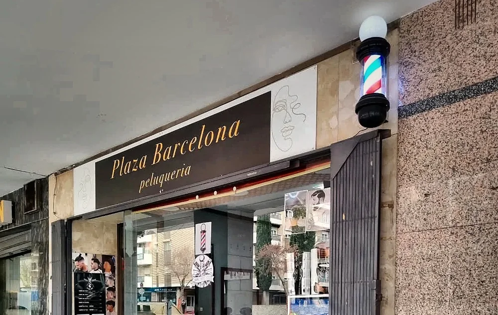

Peluquería · Barrio Garrido, Salamanca
El artedel corte.
Cortes, degradados, barba y peinado en la Plaza de Barcelona. Pásate cuando quieras: muy pronto también podrás reservar tu cita online.
 Plaza de Barcelona, 17
Plaza de Barcelona, 17
ServiciosCorte · Degradado · Barba
ReservasOnline muy pronto
BarrioGarrido, Salamanca
Dónde estamosPlaza de Barcelona, 17
Dónde estamos
Plaza de Barcelona, 17
37004 Salamanca · Barrio Garrido
